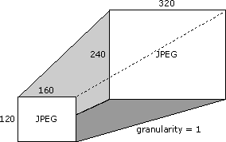
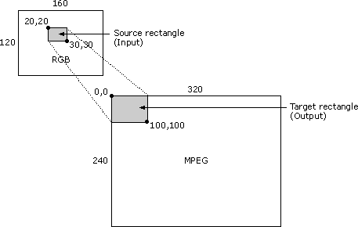

[The feature associated with this page, DirectShow, is a legacy feature. It has been superseded by MediaPlayer, IMFMediaEngine, and Audio/Video Capture in Media Foundation. Those features have been optimized for Windows 10 and Windows 11. Microsoft strongly recommends that new code use MediaPlayer, IMFMediaEngine and Audio/Video Capture in Media Foundation instead of DirectShow, when possible. Microsoft suggests that existing code that uses the legacy APIs be rewritten to use the new APIs if possible.]
The IAMStreamConfig::GetStreamCaps method presents video capabilities in an array of pairs of AM_MEDIA_TYPE and VIDEO_STREAM_CONFIG_CAPS structures. You can use this to expose all the formats and resolutions supported on a pin as discussed below.
For audio-related examples of GetStreamCaps, see Audio Capabilities.
Suppose your capture card supports JPEG format at all resolutions between 160 x 120 pixels and 320 x 240 pixels, inclusive. The difference between supported resolutions is one in this case because you add or subtract one pixel from each supported resolution to get the next supported resolution. This difference in supported resolutions is called granularity.
Suppose your card also supports the size 640 x 480. The following illustrates this single resolution and the above range of resolutions (all sizes between 160 x 120 pixels and 320 x 240 pixels).

Also, suppose it supports 24-bit color RGB format at resolutions between 160 x 120 and 320 x 240, but with a granularity of 8. The following illustration shows some of the valid sizes in this case.
To put it another way, and listing more resolutions, the following are all among the list of valid resolutions.
Use GetStreamCaps to expose these color format and dimension capabilities by offering a media type of 320 x 240 JPEG (if that is your default or preferred size) coupled with minimum capabilities of 160 x 120, maximum capabilities of 320 x 240, and a granularity of 1. The next pair you expose by using GetStreamCaps is a media type of 640 x 480 JPEG coupled with a minimum of 640 x 480 and a maximum of 640 x 480 and a granularity of 0. The third pair includes a media type of 320 x 240, 24-bit RGB with minimum capabilities of 160 x 120, maximum capabilities of 320 x 240, and a granularity of 8. In this way you can publish almost every format and capability your card might support. An application that must know what compression formats you provide can get all the pairs and make a list of all the unique subtypes of the media types.
A filter obtains its media type source and target rectangles from the VIDEOINFOHEADER structure's rcSource and rcTarget members, respectively. Filters do not have to support source and target rectangles.
The cropping rectangle described throughout the IAMStreamConfig documentation is the same as the VIDEOINFOHEADER structure's rcSource rectangle for the output pin.
The output rectangle described throughout the IAMStreamConfig documentation is the same as the biWidth and biHeight members of the output pin's BITMAPINFOHEADER structure (see DV Data in the AVI File Format.).
If a filter's output pin is connected to a media type with nonempty source and target rectangles, then your filter is required to stretch the input format's source subrectangle into the output format's target subrectangle. The source subrectangle is stored in the VIDEO_STREAM_CONFIG_CAPS structure's InputSize member.
For example, consider the following video compressor scenario: The input image is in RGB format and has a size of 160 x 120 pixels. The source rectangle's upper-left corner is at coordinate (20,20), and its lower-right corner is at (30,30). The output image is in MPEG format with a size of 320 x 240. The target rectangle's upper-left corner is at (0,0) and its lower-right corner is at (100,100). In this case, the filter should take a 10 x 10 piece of the 160 x 120 RGB source bitmap, and make it fill the top 100 x 100 area of a 320 x 240 bitmap, leaving the rest of the 320 x 240 bitmap untouched. The following illustration shows this scenario.

A filter might not support this and can fail to connect with a media type where rcSource and rcTarget are not empty.
The VIDEOINFOHEADER structure exposes information about a filter's data rate capabilities. For example, suppose you connected your output pin to the next filter with a certain media type (either directly or by using the media type passed by the CMediaType::SetFormat function). Look at the dwBitRate member of that media type's VIDEOINFOHEADER format structure to see what data rate you should compress the video to. If you multiply the number of units of time per frame in the VIDEOINFOHEADER structure's AvgTimePerFrame member by the data rate in the dwBitRate member and divide by 10,000,000 (the number of units per second), you can figure out how many bytes each frame should be. You can produce a smaller sized frame, but never a larger one. To determine the frame rate for a video compressor or for a capture filter, use AvgTimePerFrame from your output pin's media type.
Â
Â